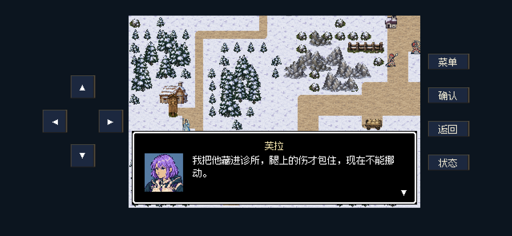
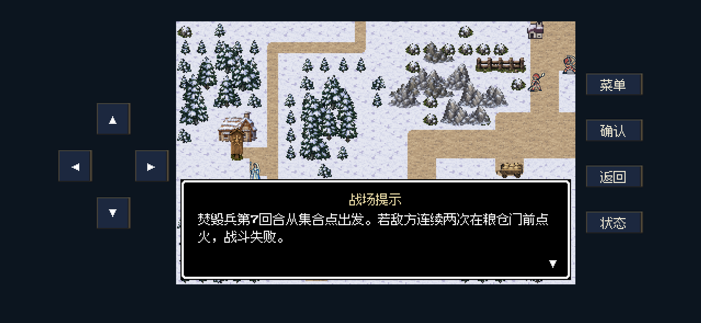
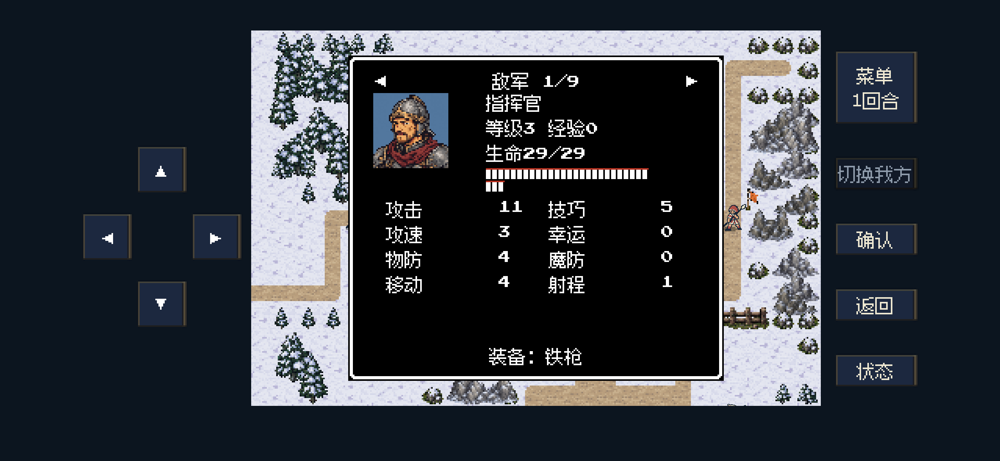

复仇与回忆 · 本地源码验收 · 2026-10-26
第一章剧情衔接与 M12 反馈
七关补齐主角团的来意、眼前遭遇与行动选择；维持“外传”短句、直白的说话节奏。敌军数值只调整 M12，增加指挥官单独画像，并把芙拉留守诊所的原因写进开场。
焚粮提示已改为：
若敌方连续两次在粮仓门前点火，战斗失败。
焚毁兵仍从第7回合出发；首次点火提示已说明“已点火一次”。失败规则保持原机制。
玩家能看到的剧情接续
原有墓前开局、赫兰合作、科兰败北 D13、日返与庆典据点流程继续衔接。M14守军全灭时改从撤离军令得知线索；未入队的芙拉、蕾娜遇难时，不让替代人物借用她们的私人经历。
同步文档：完整故事剧情 · 完整台词汇总 · 完整游戏设定。
手机比例运行画面
Godot后台视口，现有iPhone安全区。点击查看原尺寸；对白、画像与边框安全间距已实际查看。
主角团先说清来到粮站的目的 · 2556×1179 · 101,066 字节
芙拉说明伤者不能挪动的原因 · 2556×1179 · 101,337 字节
明确点火次数与失败条件 · 2556×1179 · 97,806 字节
指挥官独立画像；生命已调整为29 · 2556×1179 · 97,427 字节
只调整 M12 敌军
力量增加2，对应相同装备下的攻击增加2。指挥官属于士兵，也增加2生命；其铁枪装备后攻击仍为11。佣兵采用本关固定成长：等级1→2、生命+2、力量／技巧／速度／物防各+1；击败经验40→44。幸运、魔防、移动、射程、装备和掉落保持。
原敌军构造器每两级才给一档基础成长，直接改等级无法满足本次“增加对应数值”的要求，因此佣兵使用明确的关卡成长值。旧档只迁移已知旧值，保留伤势和死亡，不重复叠加；不在读取时新增敌人或移动单位。
指挥官独立画像
中年面貌、胡须与颊疤，铁盔配短脊和铜色额带，红围巾；与普通士兵区分。状态页与本关“指挥官”对白共用这一身份。
运行图48×48，40色，1,277字节。使用内置 image_gen 生成，参考现有士兵与科兰的像素风格，原图离线保留。
运行画像 · 原始生成图 · 提示词记录 · 工具与素材记录
七关逐句前后对照
左侧为本次修改前的工作区文本，右侧为当前运行稿；并非用Git旧提交覆盖其他工作的结果。
M11 · 流民林路
起因
修改前科兰押送兵把凯尔放走的居民重新赶回雪原；胡纳普先完成兄长没完成的护送。
当前稿科兰押送兵把凯尔放走的居民重新赶回雪原；胡纳普先完成兄长没完成的护送。
开场
修改前达恩：流民在前面。东北的旗标就是出口。
奥托：追击队长守着最后那道隘口，必须先把他打退。
胡纳普：先清桥边的追兵，别让弓手拖住他们。
奥托：南边这座救护哨还能用。受伤就退到哨所驻守，下次轮到我们行动时能恢复5点生命。
当前稿胡纳普：穿过这条林路，就能去丘堡了？
奥托：是。先查清科兰的守备，再想进旧塔堡的事。
达恩：等等！桥边那几个人，是今天离村的！
居民：我们不回征调营！孩子已经走不动了！
胡纳普：达恩，护住他们。我先拦下追兵。
奥托：我去看出口，不能再让人把路堵住。
战场提示：护送两组流民抵达东北旗标，并击败出口前的追击队长。
战场提示：驻守南侧林路救护哨，下次己方阶段开始恢复5生命。
途中事件
当前稿奥托：桥边清开了。前面还有一条小路，让流民先过去。
战后
修改前居民：凯尔也是从这里带我们走的。
奥托：粮站在北面，那里还能找到凯尔军令的副本。
胡纳普：先安置伤者。接下来去丘堡粮站。
战场提示：主线：前往丘堡粮站。
战场提示：可选支线：旧矿道救援、林村诊所送药。可先做，也可稍后返回。
当前稿居民：多谢你们。凯尔那年也是这样，把我们从关卡带出来的。
胡纳普：你们先到村里歇下，伤者别再赶路。
奥托：科兰把赈灾粮扣在丘堡。查查粮车和军令，就能找到他留下的线索。
胡纳普：那就去粮站。不能让这些人逃出来以后还挨饿。
战场提示：主线前往丘堡粮站；旧矿道救援、林村诊所送药为可选支线，可稍后返回。
人物缺席处理
修改前达恩亡：胡纳普直接要求护送居民；奥托亡：固定村民指出林边小路与凯尔军令。删除同伴私人回忆，不给替代者虚构旧关系。
当前稿正式同伴濒死时由固定村民提供道路消息，不借其身份讲私人往事；原伤情保持。
M12 · 丘堡粮站
起因
修改前赈灾粮被科兰扣留，修女芙拉与领粮居民也被拘押。
当前稿赈灾粮被科兰扣留，领粮的老人被士兵打伤，芙拉留在诊所照护。
开场
修改前芙拉：粮在北边那间仓里。他们说谁敢靠近就烧掉。
胡纳普：先挡住拿火把的人。
战场提示：焚毁兵从集合点出发，第7回合开始行动。连续两次在粮仓门前点火会失败。
战场提示：西南诊所门前的救护点仍有基础包扎用品。站在挂牌的门前格，下次己方阶段开始恢复5生命；别耽误拦截焚毁兵。
当前稿胡纳普：前面就是粮站。先找管粮的人，问清科兰的车队往哪儿走。
达恩：诊所门前有人！
芙拉：别站在大路上，仓里还有士兵。
胡纳普：你是教堂的人？
芙拉：我叫芙拉，来领赈济粮。他们扣下粮，还打伤了来领粮的老人。
芙拉：我把他藏进诊所，腿上的伤才包住，现在不能挪动。
胡纳普：我们来挡住士兵。你留在这里照看他。
指挥官：守住粮仓！谁敢过来，就把粮烧了！
芙拉：仓门前还有拿火把的人。村里的人已经等了好几天。
胡纳普：先把粮保住。找到粮车账目，我们还可以追查科兰。
奥托：我盯住院里的兵，你们从村边过去。
战场提示：焚毁兵第7回合从集合点出发。若敌方连续两次在粮仓门前点火，战斗失败。
战场提示：驻守西南诊所门前的救护点，下次己方阶段开始恢复5生命。
途中事件
当前稿胡纳普：仓门拿下了！先收走火把，别让他们再拖走粮车。
奥托：这里由我看着，你去找管粮的人。
战后
修改前胡纳普：粮车按原名单送回去。
芙拉：我与你去押送所，那里也有人等药。 M12-MYTH场景线索按5.2节播放，不追加战斗。
当前稿胡纳普：先把伤者安顿好，粮食按原名单送回各村。
仓吏：南岗押送所还关着人，军令也在那里。领粮的人有几个也被押走了。
胡纳普：我们去查。粮车先送出去，不能再叫村里的人空等。
人物缺席处理
修改前芙拉在获救前死亡：居民要求粮按原名单发放，教团仍可凭粮车与军令合作；不招募芙拉。
当前稿未入队的芙拉若遇难，不招募、不让她在战后发言；固定仓吏交代分粮与押送所线索。
M13 · 南岗押送所
起因
修改前牢中有违抗强迁命令的骑士蕾娜，以及准备运往旧塔堡的劳工。
当前稿牢中有违抗强迁命令的骑士蕾娜，以及准备运往旧塔堡的劳工。
开场
修改前奥托：牢门在两边，先把院子清出来。
胡纳普：有人开门，其他人挡住押送兵。
当前稿胡纳普：仓吏说，押送的军令都在这里。先查清被抓来的人要送去哪儿。
奥托：院子两边都是牢房。有人还没被押走。
囚犯：外面有人吗？别让他们再把我们送去旧塔！
胡纳普：我们来开门。留意院里的弓手。
达恩：明白。先让牢里的人出来。
蕾娜：我是押送骑士蕾娜。他们要抓走受我护送的居民，我不肯，才被关在这里。
战场提示：打开两间牢房并击败押送长，至少救出一组劳工。
途中事件
修改前蕾娜：我能走。先去另一间，他们没有力气再等了。
当前稿蕾娜：另一间牢里还有伤者，他们走不快。先把他们带出去。
胡纳普：先把伤者带出去。能走的帮忙照看他们。
战后
修改前蕾娜：这些人本来由我护送，是我让他们被带到了这里。
胡纳普：把他们送回去，再决定要不要同行。
当前稿蕾娜：这些人本该由我护送回村，却被我带进了牢里。
胡纳普：把他们送回去。军令留下，科兰不能再说什么都不知道。
劳工：还有一批人被送去旧塔修工事。我们本来明天也要走。
胡纳普：我会去旧塔。先找个能安置你们的地方。
人物缺席处理
修改前奥托亡：劳工指出左右牢房；蕾娜亡：保留其阵亡、由押送军令交代旧塔劳工，不出现她的存活谈话。
当前稿蕾娜未入队时若遇难，保留真实结果；牢中劳工说明旧塔去向，军令仍可取得，主线不要求她存活。
M14 · 旧塔外营
起因
修改前赫兰正式提供援军；外营阻断夺城与释放塔工的路线。
当前稿赫兰正式提供援军；外营阻断夺城与释放塔工的路线。
开场
修改前兰斯：赫兰大人让我带你们进城。右边是骑兵营，别都挤在那条路上。
当前稿胡纳普：过了外营，就是旧塔堡。赫兰答应的通路还在吗？
兰斯：科兰的旧部守着两座哨卡，他们不肯认通行标记。
教团兵：没有将军的军令，谁也不准过去！
胡纳普：那就拿下哨卡。塔里的劳工也得有路出来。
兰斯：别把愿意投降的人逼进内院，我来劝他们放下武器。
战场提示：控制南营、东营两处哨卡，并击败守将或接受投降。
途中事件
修改前兰斯：愿意放下武器的去西门。不要再往内院退。
当前稿兰斯：放下武器，去西门等候。不要再替科兰把人堵在内院。
战后
修改前胡纳普：塔工还在里面？
投降兵：将军要带粮走，没给他们留车。
当前稿胡纳普：塔工还在里面？
投降兵：是。将军要带粮走，没给他们留车。北门还有亲兵接应。
胡纳普：先把两边的路守住。我们进塔堡，把人接出来。
无人存活投降分支
当前稿胡纳普：营里的粮车都往北去了。
奥托：营帐里有张撤离军令，只带亲兵和粮食，没写内院的劳工。
胡纳普：科兰要把他们丢在塔里。先守住路，我们进堡救人。
人物缺席处理
修改前兰斯在本关阵亡：指挥官投降时由普通教团兵传令；以后不播放兰斯的旧同袍交涉。
当前稿兰斯濒死时由固定教团兵传令，不让正在接受照护的人站起来交涉；投降和主线通路保留。
M15 · 海峡旧塔堡
起因
修改前科兰带亲兵与粮食准备逃离，把劳工留在内院。胡纳普进入复仇终点。
当前稿科兰带亲兵与粮食准备逃离，把劳工留在内院。胡纳普进入复仇终点。
开场
修改前科兰：守住粮车，内院的人留在那里。
胡纳普：先去内院，别让他们把门堵上。
战场提示：科兰第6回合且半血时撤离，最晚第8回合出发。北门是他的撤离点。
当前稿胡纳普：这里就是旧塔堡。凯尔被押回营那天，我只走到过这道门。
奥托：内院还有人，粮车却在往北门走。科兰准备逃了。
劳工：别关门！我们还在里面！
胡纳普：先开内院的门，不能再把他们丢在这里。
科兰：粮车先走。谁敢回头，军法处置！
胡纳普：科兰！凯尔的事，你今天得说清楚。
战场提示：科兰第6回合且半血时撤离，最晚第8回合出发。必须阻止他到达北门，并至少救出一组劳工。
途中事件
修改前胡纳普：凯尔回营的时候，你答应过放人。
科兰：他已经把整支军队的命令都坏掉了。
当前稿胡纳普：凯尔回营的时候，你答应过放人。
科兰：他已经把整支军队的命令都坏掉了。
战后
修改前D13败北段，救出劳工；赫兰公开凯尔军令，乌库布·卡基显灵与庆典前夜。D12不重复。
当前稿赫兰：军令找到了。凯尔是为放走居民才抗命的，我会把这件事公布。
胡纳普：内院的人先带出来，还有伤者等着医者。
奥托：缴械的人不要为难。先把路让给伤者。
胡纳普：人和粮都安顿好，再谈庆典。
人物缺席处理
修改前劳工两组分别记录；科兰罪责来自军令与既有处刑见证，不因奥托阵亡被改写。
当前稿两组劳工分别记录生还与遇难，不把遇难者写成获救；科兰罪责由军令和处刑见证共同说明，奥托濒死不阻断主线。
S11 · 旧矿道救援
起因
当前稿被征调进矿的村民请求带出伤员与工具，贝克留在岔路处照看他们。
开场
修改前贝克：我用弓掩护矿工撤离。工具还在里面，先救人。
胡纳普：我来清路，你跟住他们，别独自冒险。
战场提示：贝克尚未入队，会随矿工自动推进并在安全时弓援；战后存活可邀请同行。
贝克：南边侧巷留着救护帐。受伤的人可以退到帐前休整，我会跟住矿工。
战场提示：驻守矿工救护岗，下次己方阶段开始恢复5生命。
战场提示：东北主巷有弓手看守，先清路再让矿工通过。
当前稿胡纳普：矿工被困在这条道里？
村民：他们只是去领粮，就被征调来挖矿。现在出口还守着兵。
贝克：我是贝克。我把两拨人领到这里，一个人送不出去。
达恩：你怎么没先走？
贝克：有人受了伤，不认得岔路。我走了，他们怎么办？
胡纳普：我们来开路。工具要是还能拿回来，也替你们带出去。
奥托：先送人出矿，再找工具，别分散。
战场提示：贝克暂不可操控，会随矿工推进并在安全时弓援；战后存活可邀请同行。
战场提示：驻守南侧矿工救护岗，下次己方阶段开始恢复5生命。东北主巷另有弓手看守。
途中事件
修改前矿工：这是征调时留下的工具。先让人出去，再来搬它们。
当前稿矿工：前面就是出口！让伤重的先走，别落下后面的人。
战后
修改前贝克：矿工已经送出去了，工具可以再来搬。你们还缺人吗？
当前稿矿工：我们只是来领粮，他们拿着征调令，就把人关进了矿里。
胡纳普：人都接出来了，先回村歇下。工具的事稍后再说。
矿工：多谢！我得回去看看家里人。
人物缺席处理
修改前贝克死则失去招募；奥托亡由矿工辨认遗物。主线罪证另有固定来源。
当前稿未入队贝克若遇难，不再邀请或在战后发言；两组矿工仍各自计入任务，主线线索不依赖本支线。
S12 · 林村诊所道路
起因
开场
修改前胡纳普：北岸诊所还缺药，赫维正在照护伤者。我们护送这位运药员过去。
运药员：药已经装车。请先清桥头，我会沿安全的路推车；敌人靠近时，我就在后方等。
战场提示：赫维留守北岸诊所，不参与作战。送药完成、管理员接手后，可在诊所邀请他同行。
运药员：南村屋前挂了救护牌，那里还有包扎用品。有人受伤可以先退过去，我会等前面的路安全再走。
战场提示：驻守南村救护屋门前格，下次己方阶段开始恢复5生命；北岸诊所仍需这批药。
当前稿胡纳普：过了这座桥，就能接上北去的路？
奥托：是。可军队占了道路，药车也堵在这里。
运药员：车上是送诊所的药。赫维还守着伤者，北岸已经等了三天。
胡纳普：他怎么没派人来取？
运药员：他本想去塔里查些事。昨夜又送来几个伤者，就没能走。
赫维：先把药送进来！有人还在发热，我不能把他们丢下。
胡纳普：我们来开路。塔里的事，等病人安顿好再问他。
战场提示：药车由运药员护送，前路安全时自动前进，敌军靠近时等待。
战场提示：赫维留守北岸诊所，不参与作战。完成送药和诊所交接后，可邀请他同行。
战场提示：驻守南村救护屋门前格，下次己方阶段开始恢复5生命。
途中事件
修改前运药员：我把车推进院内卸药，腾出门前的路。
赫维：药单与药品对上了，先按伤情分发。
当前稿运药员：药到了！我把车推进院里，别挡着门。
管理员：先把退热的药抬进来，里面还在等。
战后
修改前管理员：药品已经核对，我来接手发药和照护。
赫维：我先把伤情和用药记录交给你，交接好再谈同行。
当前稿运药员：路上没有再遇到追兵，药都送到了。
管理员：我去叫留守的医者来，把伤者都安顿好。
胡纳普：你们先忙。我们到院里等，不催着谁走。
人物缺席处理
修改前芙拉亡由诊所管理员提出药箱需求；赫维死则只完成送药。
当前稿赫维未入队时若遇难，只完成送药，由固定医者接手诊所，不出现他的招募；芙拉缺席或濒死也不阻断药车任务。
验证结果与实际范围
178项规则／分支／存档检查通过；385项后台呈现检查通过，覆盖99页对白。
M12用既有历史部署记录正常输入通关：7回合，549次输入；继续完成分粮、邀请芙拉并返回大地图。没有强制胜利或修改战斗中的属性、随机状态、位置。
113条起因、台词与缺席说明已对照《完整台词汇总》确认一致。其他六关敌军、七关地图／部署／交互／目标未改。
- 本轮未导出iPhone安装包，也未安装、更新或启动手机游戏。
- 运行画面为防抢焦点脚本生成的后台Godot视口；2556×1179，使用现有iPhone安全区。未执行真机触摸试玩。
- 七关完成了对白与布局检查；正常输入通关仅复测M12，使用既有历史部署队伍，不代表首周目或真人难度。
- 旧档迁移定向检查覆盖当前地图单位的伤势、死亡与重复读取，不代表所有历史地图版本。正在播放的已存对白保持原队列，后续事件使用新稿。
- 后台呈现脚本退出时有8个ObjectDB实例和2个资源未释放的清理提示；检查正常完成，进程退出码0，无脚本错误。
证据：规则／分支／存档 · 99页呈现检查 · M12正常输入记录 · 逐个敌人数值 · 图片尺寸与字节数 · 最终范围及文件哈希